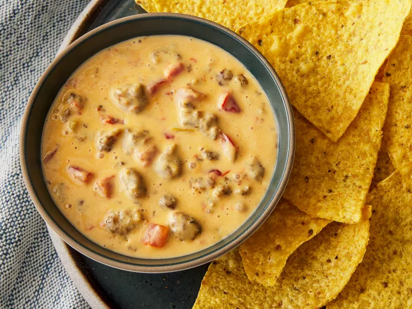

Velveeta Spicy Sausage Dip

A simple sausage and cheese dip perfect for dipping tortillas
in while watching your favorite sports team or just as a
delicious snack or even a meal!
Ingredients
- 1 pound Velveeta, cut into 1/2-inch cubes
- 1 (10 ounce) can Ro-tel Diced Tomatoes and Green
Chilies, un-drained
- 1/2 pound breakfast pork sausage, cooked and drained
Steps
- Gather all ingredients.
- Mix Velveeta, Ro-tel, and cooked pork sausage together
in a microwave-safe bowl.
- Microwave on high for 3 minutes. Stir. Continue
microwaving until Velveeta is complete melted, about 2
more minutes. Store leftover dip in an airtight container
in the refrigerator for up to 3 days. Reheat dip in the
microwave before serving.
Recipe by
Annie Campbell.